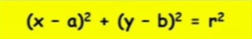
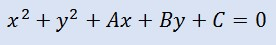
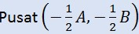
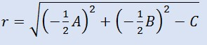
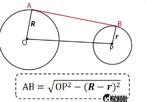
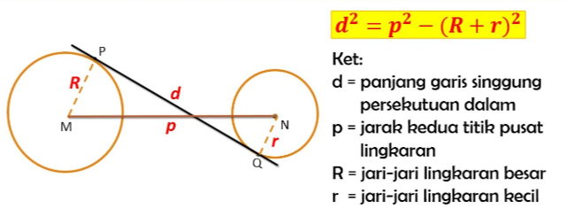

Lingkaran
- Persamaan Umum Lingkaran:
- Persamaan Umum Lingkaran dengan titik pusat di (a,b): 
- Bentuk Umum lingkaran: 
- Rumus titik pusat dan jari-jari
- Rumus untuk mencari titik pusat dan jari-jari dengan bentuk Umum lingkaran:  
- Garis singgung 2 lingkaran
- Rumus garis singgung persekutuan luar: 
- Rumus garis singgung persekutuan dalam: 
Iklan